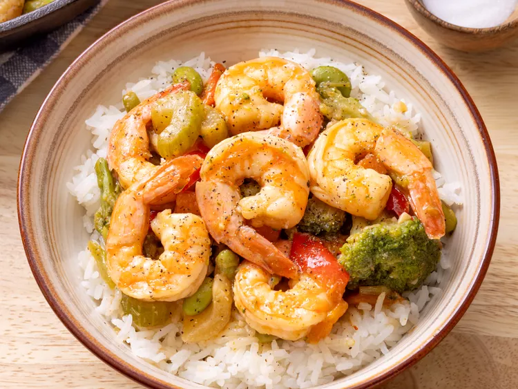

Shrimp Stir Fry Recipe

A amazing quick and easy recipe with shrimp for the sea food lovers.
This shrimp stir fry recipe with frozen vegetables, frozen shrimp, and a simple stir fry sauce
-comes together in less than 30 minutes for a quick and easy dinner! Can be serve with rice or with noodles, and enjoy.
If you are a sea food lover or just want a quick and delicous meal, this one is the one for you.
You don't need to think much when it comes to praticity and flavor. Check out the list of ingredients below and let's cook:
Ingredients:
- 1 cup chicken stock
- 1 tablespoon reduced-sodium soy sauce
- 1 tablespoon cornstarch
- salt and ground black pepper to taste
- 3 tablespoon sesame oil
- 1(16 ounce)package frozen stir-fry vegetable
- 20 uncooked medium shrimp. peeled and deveined
Steps
- Step 1
- Mix chicken stock, soy sauce, cornstarch, and garlic in a bowl; season with salt and pepper.
- Step 2
- Heat sesame oil in a large skillet over medium-high heat until oil shimmers; cook and stir vegetables in hot oil
until softened, about 4 minutes.
- Step 3
- Add shrimp; cook and stir until shrimp begin to turn pink, about 3 minutes.
- Step 4
- Stir chicken stock misture into vegetables-shrimp mixture. Continue to cook and stir until vegetables and shrimp
are coated and sauce is thickened, about 5 minutes more.
See other Recipes:
Home